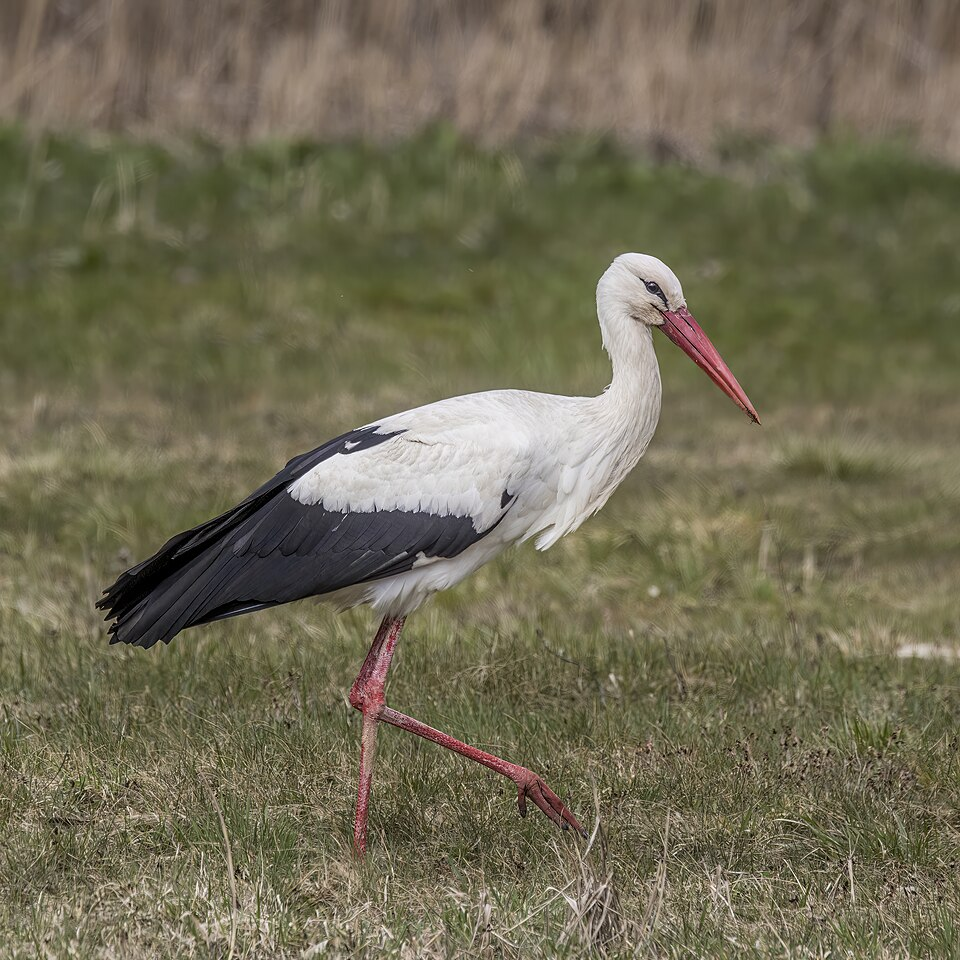

Saint / folklore
Stork veneration

Background
A Southern Italian taboo against harming storks, held to bring bad luck.
Across Europe, the white stork has been a protected and lucky bird. It nests on rooftops and chimneys and returns faithfully each spring. It brings babies, guards the house it nests on, and harming it invites misfortune: lightning, fire, or the death of a child. The taboo was strong enough that storks went unhunted in regions where almost every other bird was fair game.
In southern Italy storks were mostly birds of passage, seen on migration rather than nesting. By the twentieth century Italy had very few breeding pairs; reintroduction projects only rebuilt the population from the 1980s. A village that ate its storks’ young in the famine of 1943–44 had broken one of the oldest and most widely shared animal taboos in Europe.
In Naples ’44
A village that ate its storks’ young during the famine is regarded as having called down calamity on itself.
Appears in 1 diary entry.
-
November 25 1943Wartime hunger drives extreme culinary improvisation, including eating storks and rumors of a manatee served at a banquet for General Clark.
a widespread superstitious aversion to harming storks; a village that ate its storks' nestlings during famine is regarded as having brought calamity on itself
Use ← → to move between pages